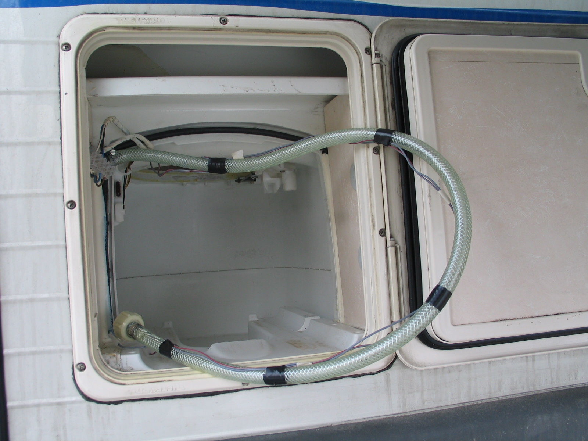

Welcome to Popravilo vodovoda
Vodovodar, Ptuj :: MojMojster.net
2020.09.07 05:54
moj mojster
moj mojster
BY DAIBAU
O nas Kako deluje Prednosti Pogosta vprašanja Za izvajalce Prijava AKTUALNA DELA OGLASI ZA DELOVNA MESTA STROKOVNA IZOBRAŽEVANJA ｜ KAKO DELUJE? REGISTRIRAJ PODJETJE PREDNOSTI KAKO DELUJE? POGOSTA VPRAŠANJA O NAS DOBRODELNOST Košarica je prazna
arhitektura gradnja streha okna,vrata inštalacije Centralni sesalni sistem Dimniki Dvigala Elektroinštalacije, Električar IR paneli Kamini Klimatske naprave Meritve elektroinstalacij Ogrevanje Plinske napeljave Prezračevanje Solarni sistemi Toplotna črpalka Vodovodar Manjša vodovodna dela, popravila fasade,pleskanje ometi,estrihi talne obloge obdelava kovin pohištvo okolica vzdrževanje drugo
Regije
Gorenjska Goriška Jugovzhodna Slovenija Koroška Notranjsko-kraška Obalno-kraška Osrednjeslovenska Podravska
Apače
Benedikt
Bistrica ob Dravi
Bogojna
Bresternica
Ceršak
Cirkovce
Cirkulane
Destrnik
Dornava
Fala
Fram
Goriščnica
Gorišnica
Gornja Radgona
Hajdina
Hoče
Hoče-Slivnica
Ivanjkovci
Jakobski Dol
jarenina
Jurovski Dol
Juršinci
Kamnica
Kidričevo
Križevci Pri Ljutomeru
Laporje
Lenart v Slovenskih Goricah
Limbuš
Lovrenc Na Dravskem Polju
Lovrenc Na Pohorju
Majšperk
Makole
Malečnik
Maribor
Marjeta na Dravskem polju
Markovci
Martjanci
Miklavž Na Dravskem Polju
Oplotnica
Orehova vas
Ormož
Pernica
Pesnica Pri Mariboru
Podgorci
Podlehnik
Pohorje
Polenšak
Poljčane
Pragersko
Ptuj
Ptujska Gora
Rače
Razkrižje
Rogašovci
Ruše
Selnica ob Dravi
Šentilj v Slovenskih goricah
Sladki Vrh
Slovenska Bistrica
Šmartno na Pohorju
Spodnji Duplek
Središče ob Dravi
Starše
Stoperce
Sv. Trojica V Slovenskih Goricah
Sveta Ana v Slovenskih Goricah
Sveti Tomaž
Trnovska Vas
Vitomarci
Voličina
Zavrč
Žetale
Zgornja Korena
Zgornja Kungota
Zgornja Ložnica
Zgornja Polskava
Zgornja Velka
Zgornji Leskovec
Pomurska Savinjska Spodnjeposavska Zasavska Inštalacije Vodovodar PtujVODOVODAR, PTUJ
Iščem dobrega vodovodarja : Zbrali in preverili smo vodovodarje , ki delajo v kraju Ptuj in okolici. Pošljite povpraševanje in zainteresirani vodovodarji vas bodo kontaktirali za ogled, predračun in ponudbe. Priporočen vodovodar na Ptuju , ki lahko izvede: vodovod pri novogradnji , kanalizacija v hiši , vodoinštalaterska dela , montaža umivalnika , priklop talnega gretja , odmaševanje odtokov , kakovosten razvod vodovoda , izvajalec vodoinštalaterstva , ali drugo se bo zagotovo našel tudi za vas. več
Prikazanih je samo do 40% podjetij, za hiter kontakt in razpoložljivost vseh zainteresiranih pošljite povpraševanje!15 NAJBOLJŠIH REZULTATOV ZA VODOVODARJI NA PTUJU
T Matom d.o.o., Kidričevo
OCENA: 10
Izvajamo različna dela v sklopu nizkih gradenj, urejanje okolice, manjša popravila, polaganje tlakovcev, nadstreški, adaptacija kopalnic, prenove stanovanj, hiš, prebijanje z raketo. Spletna stran:...
✓ VODOVODAR 6.1 KM 7 VELIKOST EKIPE6 PRIPOROČIL STRANK
Pokliči Želim kontakt, ponuboInštalacije za vodovod, ogravanje in plin, Boštjan Plajnšek s.p., Markovci
OCENA: 9.5
Podjetje Inštalacije za vodovod, ogrevanje in plin, Boštjan Plajnšek s.p. je na trgu prisotno od leta 2012, sedež podjetja pa se nahaja v Markovcih. Podjetje je specializirano a področju strojnih inšt...
✓ VODOVODAR NA PTUJU 1 VELIKOST EKIPE 8 IN VEČ LET IZKUŠENJ1 PRIPOROČIL STRANK
Pokliči Želim kontakt, ponuboŠTAJERGRADING d.o.o., Hajdina
OCENA: 8.9
Štajergrading d.o.o. smo gradbeno podjetje, katero se ukvarja z izvedbo projektov postavitve novogradenj, gradimo tako stanovanjske kot tudi ne-stanovanjske objekte. Za gradnjo poskrbimo vse od temelj...
✓ VODOVODAR NA PTUJU 10 VELIKOST EKIPE 27 IN VEČ LET TRADICIJE Pokliči Želim kontakt, ponuboMILOŠIČ ANTON S.P. - MONTING - MONT. IN SERVIS STROJNE OPREM, PTUJ
OCENA: 8.7
Nudimo prezračevanje,klimatizacijo in hlajenje prostorov.Izvajamo vodovodne inštalacije, centralne sesalne sisteme,toplotne črpalke in centralno gretje...
✓ VODOVODAR NA PTUJU 3 VELIKOST EKIPE 26 IN VEČ LET TRADICIJE Pokliči Želim kontakt, ponuboGP PROJEKT, gradbeništvo in storitve, d.o.o., Markovci
OCENA: 8.7
Smo slovensko gradbeno podjetje, katero se že vrsto let ukvarja z gradnjo stanovanjskih in ne stanovanjskih stavb. Pri tem za naše naročnike zgradimo hišo, garažo, kleti, poslovne ter druge prostore. ...
✓ VODOVODAR 5.8 KM 10 VELIKOST EKIPE 12 IN VEČ LET IZKUŠENJ Pokliči Želim kontakt, ponuboGABROVEC JANKO S.P. - INŠTALACIJA CENTRALNIH KURJAV IN MANJŠE POPRAVILO VODOVODA, Ptuj
OCENA: 8.6
Za vas poskrbimo za različna gradbena dela, med drugim tudi za elektro in vodovodne inštalacije....
✓ VODOVODAR NA PTUJU 1 VELIKOST EKIPE 26 IN VEČ LET TRADICIJE Pokliči Želim kontakt, ponuboPILINGER SILVO S.P., Ptuj
OCENA: 8.6
V našem podjetju poskrbimo za vodovodne in plinske inštalacije vašega doma. Uredimo vam tudi centralno ogrevanje....
✓ VODOVODAR NA PTUJU 1 VELIKOST EKIPE 25 IN VEČ LET TRADICIJE Pokliči Želim kontakt, ponuboMAJHEN SEBASTIEN S.P. - MONTAŽA, SERVIS TOPLOTNE TEHNIKE, Hajdina
OCENA: 8.1
V kolikor potrebujete izkušenega izvajalca na področju vodovodnih inštalacij in napeljav za ogrevanje, nas kontaktirajte in svetovali vam bomo. Za vas izvedemo servis ogrevalnih, montažo toplotne črpa...
✓ VODOVODAR NA PTUJU 1 VELIKOST EKIPE 26 IN VEČ LET TRADICIJE Pokliči Želim kontakt, ponuboTAMES podjetje za trgovino, inženiring in storitve d.o.o., Ptuj
OCENA: 7.8
Nudimo izvedbo plinskih,ogrevalnih, strojnih in elektroinštalacij po celotni Sloveniji.Izvajamo meritve in svetovanje tako za manjše kot večje objekte....
✓ VODOVODAR NA PTUJU 81 VELIKOST EKIPE 30 IN VEČ LET TRADICIJE Pokliči Želim kontakt, ponuboESIN PTUJ d.o.o., Ptuj
OCENA: 7.8
ESIN PTUJ d.o.o. smo podjetje s sežem iz Ptuja, katero se že od leta 2010 vsakodnevno tudi ustreči strankam s področja Podravske regije. Skozi naše dolgoletne izkušnje vas bomo presenetili pri kvalite...
✓ VODOVODAR NA PTUJU 15 VELIKOST EKIPE 10 IN VEČ LET IZKUŠENJ Pokliči Želim kontakt, ponuboCIMERMAN JANEZ S.P. , Markovci
OCENA: 7.7
Potrebujete zanesljivo izvedene strojne inštalacije? Znesljive in preverjene mosjtre iz tega področja? Potem naj vas hitro razveselimo, vse te kriterije ste ravnokar našli. Pri podjetju CIMERMAN JANEZ...
✓ VODOVODAR 5.5 KM 1 VELIKOST EKIPE 26 IN VEČ LET TRADICIJE Pokliči Želim kontakt, ponuboVeit Miran s.p. vodovodne in centralne inštalacije, posredništvo, Destrnik
OCENA: 7.6
Če iščete kvalitetnega mojstra za izvedbo strojnih instalacij, je podjetje Veit Miran s.p.- vodovodne in centralne inštalacije, posredništvo, pravi naslov za vas. Izkušena ekipa strokovnjakov zmontira...
✓ VODOVODAR 5.4 KM 6 VELIKOST EKIPE 22 IN VEČ LET TRADICIJE Pokliči Želim kontakt, ponuboMIT ALEŠ HORVAT S.P., Videm Pri Ptuju
OCENA: 7.6
Potrebujete zelo dobrega mojstra, ki je izkušen na področju izvajanja strojno-inštalacijskih del? Potem dovolite, da se vam na kratko predstavimo. MIT Aleš Horvat s.p. je bilo ustanovljeno leta 2001 s...
✓ VODOVODAR 5.7 KM 2 VELIKOST EKIPE 19 IN VEČ LET TRADICIJE Pokliči Želim kontakt, ponuboKLIMA-PTUJ SMILJAN TROP S.P., Ptuj
OCENA: 7.6
Podjetje Klima Ptuj d.o.o. ima dolgo tradicijo na področju izvajanja del, kot so ogrevanje, hlajenje, vodovod in kanalizacija, prezračevanje. Na podlagi bogatih referenc vam naši zanesljivi izvajalci ...
✓ VODOVODAR NA PTUJU 1 VELIKOST EKIPE 24 IN VEČ LET TRADICIJE Pokliči Želim kontakt, ponuboINMONT ŠMIGOC, vodovodne, plinske in sanitarne inštalacije, d.o.o., Markovci
OCENA: 7.5
INMONT ŠMOGOC d.o.o. smo strojnoinštalacijsko podjetje iz Markovc, ki na področju celotne Slovenije stranke razveseljuje z zanesljivimi in kvalitetno izvedenimi strojno inštalacijskimi deli. Z zaneslj...
✓ VODOVODAR 6.7 KM 3 VELIKOST EKIPE 10 IN VEČ LET IZKUŠENJ Pokliči Želim kontakt, ponubo 1 2 3 4 5 >Zadnja objavljena povpraševanja v kategoriji VODOVODAR, PTUJ
Vodovodna dela, Ptuj
Podzravljeni! Izgradnja odtokov za wc školjko, umivalnik ter tuš kad v 1. nadstropju (spodaj v pritličju na istem mestu je že wc). Cev za vodo je že speljana v 1. nadstropje (bi jo pa bilo potrebno podaljšati še za cca 3 metre za namen-odtok v kuhinji. Lp
Kumer
Menjava odtočne cevi , Ptuj
Pozdravljeni, potrebujem izvajalca za izvedbo menjave odtočne cevi od umivalnika do glavne odtočne cevi (cca 50 cm po steni in 100 cm po tleh). Lp
Roman K.
Nova inštalacija v stanovanju, Ptuj
Pozdravljeni, prenavljamo stanovanje in pri tem potrebujemo izvajalca za menjavo in novo napeljavo vodovodnih cevi. Prosim za ogled in ponudbo. LP
Lidija R.
Vodovodna napeljava in talno gretje v novogradnji, Ptuj
Pozdravljeni. Potrebujemo vodovodno instalacijo v novogradnji. Imel bi približek geberitov, kot je v načrtu. Bide v pritličju odpade ostalo vse isto. V teh. prostoru bo el. peč vailant 9kw za talno gretje in 80 l bojler ariston. Talno gretje bi imeli v obeh etažah, v dnevni bo ventilacijski kamin, kjer bom speljal cevi v mansardo, glede termostata kje se bi namestil ali bi dali v vsako sobo posebaj - kakšna je praksa pri vas? LP
Rudi K.
Vodovodar za adaptacije stanovanj (sodelovanje), 2250 Ptuj
Pozdravljeni, potrebujemo vodovodarja za daljše sodelovanje. Gre za adaptacijo večih objektov v Ptuju in Murski Soboti. Za več info me kontaktirajte. LP
Srečo
Hišna kanalizacija Jašek za kanalizacijo Priklop na vodovod Priklop na kanalizacijo Vgradnja podometnega kotlička Nove vodovodne inštalacije in odtoki Jašek za vodo Montaža sanitarne opreme Gradnja kanalizacije Cevi za kanalizacijo Vodovodne inštalacije: cena za vodovodne cevi Podometni vgradni kotliček, moderna rešitev za sanitarije Vodovod: vodovodne inštalacije in vodovodne cevi POGLEJ VEČ
VSI IZVAJALCI V KRAJU PTUJ
arhitektura, projektiranje, Ptuj
3d vizualizacija, renderji Ptuj Arhitekti, arhitektura Ptuj Cenitev nepremičnin Ptuj Geodetske storitve Ptuj Krajinski arhitekt Ptuj Notranje oblikovanje Ptuj Projektiranje, projektant Ptuj Vodja gradnje, vodja gradbišča Ptujgradbena dela konstrukcije, Ptuj
Betonarna Ptuj Gradbena dela Ptuj Gradbeni material Ptuj Novogradnja Ptuj Obnove in sanacije Ptuj Specializirana gradbena dela Ptuj Tesarsko-opažerska dela Ptujtesarstvo krovstvo kleparstvo, Ptuj
Klepar, Kleparstvo Ptuj Krovec, Krovstvo Ptuj Leseni nadstreški Ptuj Ravne strehe Ptuj Strešna okna Ptuj Tesarstvo Ptujokna vrata steklarstvo, Ptuj
Garažna vrata Ptuj Montaža oken Ptuj Montaža vrat Ptuj Notranja senčila Ptuj Notranja vrata Ptuj Obnova starih oken Ptuj Okna Ptuj Popravilo oken, vrat Ptuj Popravilo rolet, žaluzij Ptuj Pripravljalna dela Ptuj Protivlomna vrata Ptuj Rastlinjaki Ptuj Steklarstvo Ptuj Steklene fasade Ptuj Vhodna vrata Ptuj Zimski vrtovi Ptuj Zunanja senčila Ptujelektrične, strojne inštalacije, ogrevanje, vodovod, Ptuj
Centralni sesalni sistem Ptuj Dimniki Ptuj Elektroinštalacije, Električar Ptuj IR paneli Ptuj Kamini Ptuj Klimatske naprave Ptuj Meritve elektroinstalacij Ptuj Ogrevanje Ptuj Prezračevanje Ptuj Solarni sistemi Ptuj Toplotna črpalka Ptuj Vodovodar Ptujfasade pleskanje, suhomontaža, Ptuj
Fasade, Fasaderstvo Ptuj Fasadni paneli Ptuj Gradbeni odri Ptuj Pleskar, Slikopleskarstvo Ptuj Suhomontaža Ptujometi estrihi tlaki, Ptuj
Estrihi Ptuj Ometi Ptujkeramika parket talne obloge, Ptuj
Dekorativni beton, kvarc Ptuj Epoksi tlaki Ptuj Keramičar, Keramičarstvo Ptuj Laminati Ptuj Parketarstvo Ptuj Tekstilne talne obloge Ptuj Vinilne talne obloge Ptujkovinske konstrukcije ključavničar, Ptuj
Bivalni kontejnerji Ptuj Kovane ograje Ptuj Kovinske konstrukcije Ptuj Kovinske ograje Ptuj Kovinske stopnice Ptuj Kovinski nadstreški Ptuj Kovinsko pohištvo Ptuj Montažne garaže Ptuj Obdelava kovin Ptujpohištvo oprema mizarstvo, Ptuj
Lesene obloge Ptuj Lesene ograje Ptuj Lesene stopnice Ptuj Manjša popravila pohištva Ptuj Mizar, mizarstvo Ptuj Montaža pohištva Ptuj Obnova kuhinje Ptuj Pohištvo po meri Ptuj Restavratorstvo pohištva Ptuj Savne Ptuj Tapetništvo Ptuj Vrtno pohištvo Ptujvrt, okolica, asfaltiranje, tlakovanje, Ptuj
Asfaltiranje Ptuj Betonski izdelki Ptuj Kamnoseštvo Ptuj Lesene terase, WPC Ptuj Namakalni sistemi Ptuj Nizke gradnje Ptuj Podiranje dreves Ptuj Polaganje kamna Ptuj PVC ograje Ptuj Teracerstvo Ptuj Tlakovanje Ptuj Urejanje okolice Ptuj Vrtnarija, drevesnica Ptuj Vrtnarstvo Ptuj Zemeljska dela Ptujvzdrževanje, Ptuj
Čistilni servis Ptuj Dimnikarstvo Ptuj Manjša hišna popravila Ptuj Popravilo, menjava ključavnice Ptuj Prevozi Ptuj Selitve Ptuj Višinska dela Ptuj Vzdrževanje Ptujpošlji povpraševanje
MOJMOJSTER.NET
Ul. škofa Maksimilijana Držečnika 6
2000 Maribor
00386 40 145 800
Revija
Kalkulator
Aktualni projekti
Kako deluje
O nas
Pogoji uporabe
Politika zasebnosti
Informacije o piškotih
Impressum KONTAKTI
Povpraševanja: 051 216 651
Podjetja: 040 145 800
REGIONALNE STRANI
www.daibau.com
www.daibau.at
www.mojmojster.net
www.emajstor.hr
www.daibau.rs
www.daibau.sk
www.daibau.ro REGISTRIRAJ PODJETJE OBJAVI POVPRAŠEVANJE
© 2020 Eforma d.o.o., vse pravice pridržane
